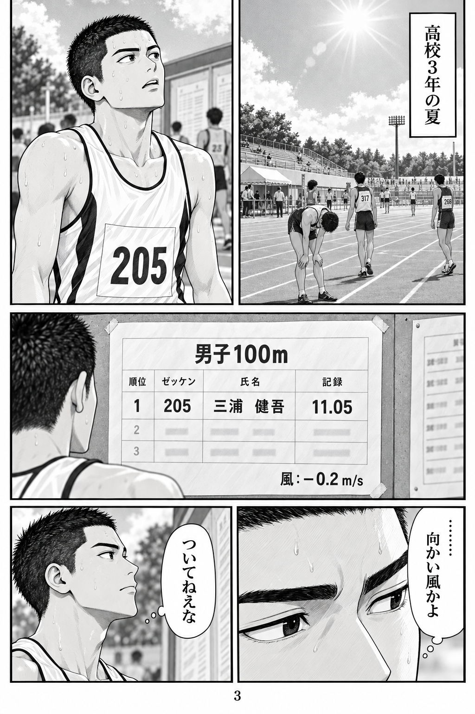
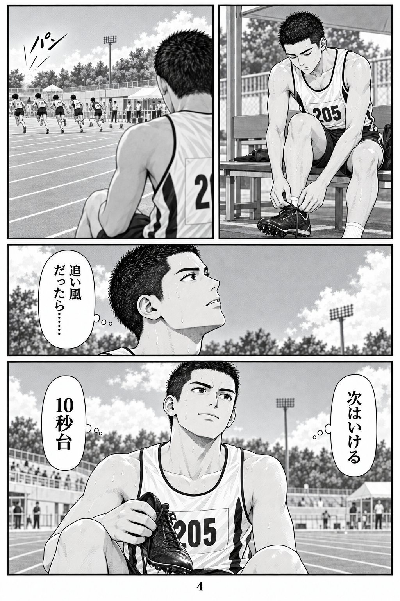
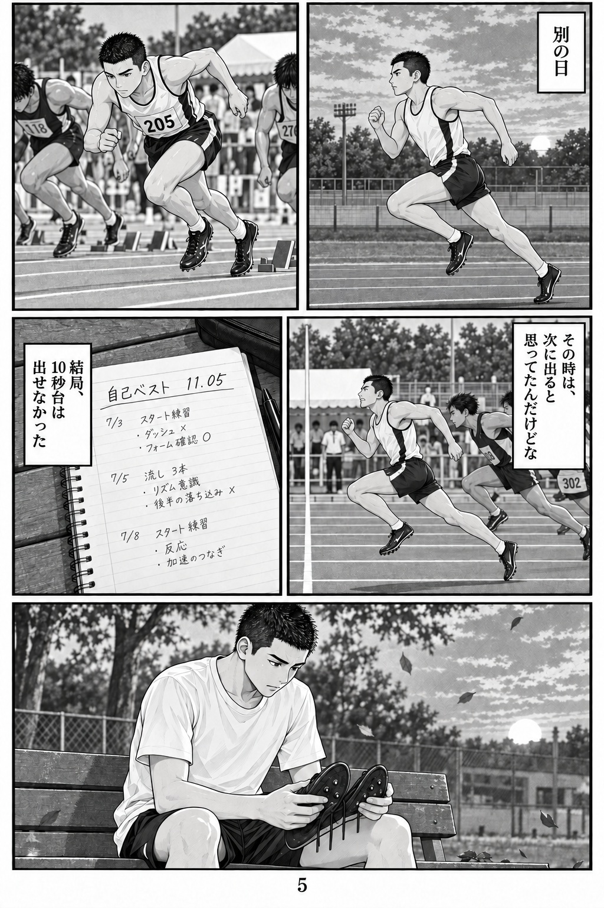
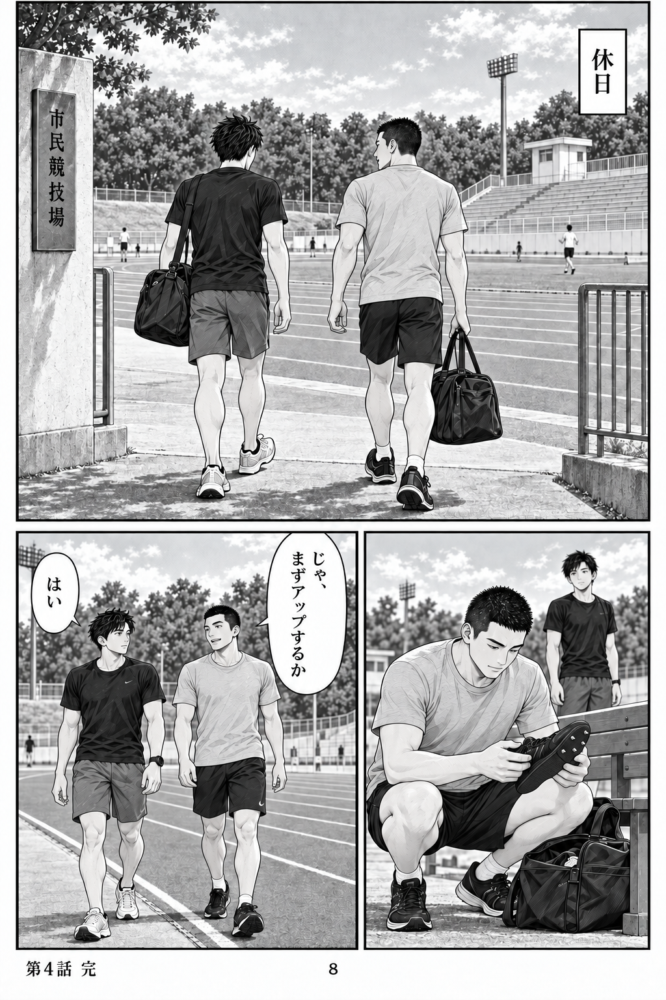

作品トップへ
まだ、速くなれる。
第4話「11秒05」 · 全8ページ
1ページずつ
続けて読む
1 / 8
1ページを大きく開く
2 / 8
2ページを大きく開く

3 / 8
3ページを大きく開く

4 / 8
4ページを大きく開く

5 / 8
5ページを大きく開く
6 / 8
6ページを大きく開く
7 / 8
7ページを大きく開く

8 / 8
8ページを大きく開く
第3話へ
←キーで次へ・→キーで前へ
作品トップへ
 1 / 81ページを大きく開く2 / 82ページを大きく開く
1 / 81ページを大きく開く2 / 82ページを大きく開く